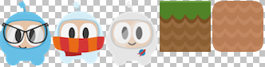
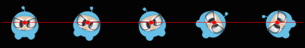
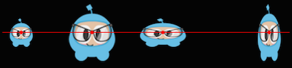
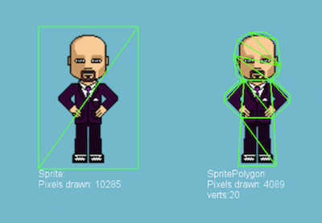

Sprites
What are Sprites
A Sprite is a 2D image that can be animated or transformed by changing its properties, including rotation, position, scale, color, etc.
Creating Sprites
There are different ways to create Sprites depending upon what you need to
accomplish. You can create a Sprite from an image with various graphic formats
including: PNG, JPEG, TIFF, and others. Let's go through some create methods and
talk about each one.
Creating a Sprite
A Sprite can be created by specifying an image file to use.
auto mySprite = Sprite::create("mysprite.png");
var mySprite = new cc.Sprite(res.mySprite_png);

The statement above creates a Sprite using the mysprite.png image. The result
is that the created Sprite uses the whole image. Sprite has the same dimensions
of mysprite.png. If the image file is 200 x 200 the resulting Sprite is 200 x
200.
Creating a Sprite with a Rect
In the previous example, the created Sprite has the same size as the original
image file. If you want to create a Sprite with only a certain portion of the
image file, you can do it by specifying a Rect.
Rect has 4 values: origin x, origin y, width and height.
auto mySprite = Sprite::create("mysprite.png", Rect(0,0,40,40));
var mySprite = new cc.Sprite(res.mySprite_png, cc.rect(0,0,40,40));

Rect starts at the top left corner. This is the opposite of what you might be
used to when laying out screen position as it starts from the lower left corner.
Thus the resulting Sprite is only a portion of the image file. In this case the
Sprite dimension is 40 x 40 starting at the top left corner.
If you don't specify a Rect, Cocos2d-x will automatically use the full width
and height of the image file you specify. Take a look at the example below. If
we use an image with dimensions 200 x 200 the following 2 statements would have
the same result.
auto mySprite = Sprite::create("mysprite.png");
auto mySprite = Sprite::create("mysprite.png", Rect(0,0,200,200));
var mySprite = new cc.Sprite(res.mySprite_png);
var mySprite = new cc.Sprite(res.mySprite_png, cc.rect(0,0,200,200));
Creating a Sprite from a Sprite Sheet
A sprite sheet is a way to combine sprites into a single file. Using a sprite sheet helps achieve better performance by batching the draw calls. They can also save disk and video memory in cases where the sprites can be packed on a sheet more efficiently (generally requires special tools). You will read more about this in the Advanced Chapter, but it is but it is one of many standard methods in the industry for increasing game performance.
When using a sprite sheet it is first loaded, in its entirety, into the
SpriteFrameCache. SpriteFrameCache is a caching class that retains the SpriteFrame
objects added to it, for future quicker access. The SpriteFrame is loaded
once and retained in the SpriteFrameCache
Here is an example sprite sheet:

It doesn't look like much but let's take a closer look at what is happening:

As you can see the sprite sheet, at a minimum it reduces unneeded space and consolidates all sprites into a single file.
Let's tie this all together!
Loading a Sprite Sheet
Load your sprite sheet into the SpriteFrameCache, probably in AppDelegate:
// load the Sprite Sheet
auto spritecache = SpriteFrameCache::getInstance();
// the .plist file can be generated with any of the tools mentioned below
spritecache->addSpriteFramesWithFile("sprites.plist");
// load the Sprite Sheet
var spritecache = cc.SpriteFrameCache;
// the .plist file can be generated with any of the tools mentioned below
spritecache.addSpriteFramesWithFile(res.sprites_plist);
Now that we have a sprite sheet loaded into SpriteFrameCache we can create
Sprite objects by utilizing it.
Creating a Sprite from SpriteFrameCache
This creates a Sprite by pulling it from the SpriteFrameCache.
// Our .plist file has names for each of the sprites in it. We'll grab
// the sprite named, "mysprite" from the sprite sheet:
auto mysprite = Sprite::createWithSpriteFrameName("mysprite.png");
// Our .plist file has names for each of the sprites in it. We'll grab
// the sprite named, "Blue_Front1" from the sprite sheet:
var mysprite = cc.Sprite.createWithSpriteFrameName(res.mySprite_png);
Creating a Sprite from a SpriteFrame
Another way to create the same Sprite is by fetching the SpriteFrame from the
SpriteFrameCache, and then creating the Sprite with the SpriteFrame. Example:
// this is equivalent to the previous example,
// but it is created by retrieving the SpriteFrame from the cache.
auto newspriteFrame = SpriteFrameCache::getInstance()->getSpriteFrameByName("Blue_Front1.png");
auto newSprite = Sprite::createWithSpriteFrame(newspriteFrame);
// this is equivalent to the previous example,
// but it is created by retrieving the SpriteFrame from the cache.
var newspriteFrame = cc.SpriteFrameCache.getSpriteFrameByName(res.sprites_plist);
var newSprite = cc.Sprite.createWithSpriteFrame(newspriteFrame);
Tools for creating Sprite Sheets
Creating a sprite sheet manually is a tedious process. Fortunately there are tools that can generate them automatically. These tools can provide even more ways to adjust your sprite sheet for maximum optimization!
Here are a few tools:
Sprite Manipulation
After creating a Sprite you will have access to a variety of properties it
has that can be manipulated.
Given:
auto mySprite = Sprite::create("mysprite.png");
var mySprite = new Sprite(res.mysprite_png);
Anchor Point and Position
Anchor Point is a point that you set as a way to specify what part of
the Sprite will be used when setting its position. Anchor Point affects
only properties that can be transformed. This includes scale, rotation,
skew. This excludes color and opacity. The anchor point uses a
bottom left coordinate system. This means that when specifying X and Y coordinate
values you need to make sure to start at the bottom left hand corner to do your
calculations. By default, all Node objects have a default anchor point of
is (0.5, 0.5).
Setting the anchor point is easy:
// DEFAULT anchor point for all Sprites
mySprite->setAnchorPoint(0.5, 0.5);
// bottom left
mySprite->setAnchorPoint(0, 0);
// top left
mySprite->setAnchorPoint(0, 1);
// bottom right
mySprite->setAnchorPoint(1, 0);
// top right
mySprite->setAnchorPoint(1, 1);
// DEFAULT anchor point for all Sprites
mySprite.setAnchorPoint(cc._p(0.5, 0.5));
// bottom left
mySprite.setAnchorPoint(cc._p(0, 0));
// top left
mySprite.setAnchorPoint(cc._p(0, 1));
// bottom right
mySprite.setAnchorPoint(cc._p(1, 0));
// top right
mySprite.setAnchorPoint(cc._p(1, 1));
To represent this visually:

Sprite properties effected by anchor point
Using anchor point effects only properties that can be transformed. This includes scale, rotation, skew.
Position
A sprite's position is affected by its anchor point as it is this point
that is used as a starting point for positioning. Let's visually look at how this
happens. Notice the colored line and where the sprite's position is in relation
to it. Notice, as we change the anchor point values, the sprite's position
changes. It is important to note that all it took was changing the anchor point
value. We did not use a setPosition() statement to achieve this:

There are more ways to set position than just anchor point. Sprite objects
can also be set using the setPosition() method.
// position a sprite to a specific position of x = 100, y = 200.
mySprite->setPosition(Vec2(100, 200));
mySprite.setPosition(cc._p(100, 200));
Rotation
Changes the sprite's rotation, by a positive or negative number of degrees.
A positive value rotates the Sprite object clockwise, while a negative value
rotates the Sprite object counter-clockwise. The default value is 0.
// rotate sprite by +20 degrees
mySprite->setRotation(20.0f);
// rotate sprite by -20 degrees
mySprite->setRotation(-20.0f);
// rotate sprite by +60 degrees
mySprite->setRotation(60.0f);
// rotate sprite by -60 degrees
mySprite->setRotation(-60.0f);
// rotate sprite by +20 degrees
mySprite.setRotation(cc._p(20.0));
// rotate sprite by -20 degrees
mySprite.setRotation(cc._p(-20.0));
// rotate sprite by +60 degrees
mySprite.setRotation(cc._p(60.0));
// rotate sprite by -60 degrees
mySprite.setRotation(cc._p(-60.0));

Scale
Changes the sprite's scale, either by x, y or uniformly for both x and y. The default value is 1.0 for both x and y.
// increases X and Y size by 2.0 uniformly
mySprite->setScale(2.0);
// increases just X scale by 2.0
mySprite->setScaleX(2.0);
// increases just Y scale by 2.0
mySprite->setScaleY(2.0);
// increases X and Y size by 2.0 uniformly
mySprite.setScale(cc._p(2.0));
// increases just X scale by 2.0
mySprite.setScaleX(cc._p(2.0));
// increases just Y scale by 2.0
mySprite.setScaleY(cc._p(2.0));

Skew
Changes the sprite's skew, either by x, y or uniformly for both x and y. The default value is 0,0 for both x and y.
// adjusts the X skew by 20.0
mySprite->setSkewX(20.0f);
// adjusts the Y skew by 20.0
mySprite->setSkewY(20.0f);
// adjusts the X skew by 20.0
mySprite.setSkewX(cc._p(20.0));
// adjusts the Y skew by 20.0
mySprite.setSkewY(cc._p(20.0));

Sprite properties not affected by anchor point
There are a few properties of Sprite objects that are not affected by
anchor point. Why? Because they only change superficial qualities like color
and opacity.
Color
Changes the sprite's color. This is done by passing in a Color3B object.
Color3B objects are RGB values. We haven't encountered Color3B yet but
it is simply an object that defines an RGB color. An RGB color is a 3 byte
value from 0 - 255. Cocos2d-x also provides pre-defined colors that you can pick
from. Using these will be a bit faster since they are pre-defined. A few examples:
Color3B::White and Color3B::Red.
// set the color by passing in a pre-defined Color3B object.
mySprite->setColor(Color3B::WHITE);
// Set the color by passing in a Color3B object.
mySprite->setColor(Color3B(255, 255, 255)); // Same as Color3B::WHITE
// set the color by passing in a pre-defined Color3B object.
mySprite.setColor(cc.color.WHITE);
// Set the color by passing in a Color3B object.
mySprite.setColor(cc.color(255, 255, 255)); // Same as Color3B::WHITE

Opacity
Changes the sprite's opacity by the specified value. An opaque object is not transparent at all. This property expects a value from 0 to 255, where 255 means fully opaque and 0 means fully transparent. Think: zero opacity means invisible, and you'll always understand how this works. The default value is 255 (fully opaque).
// Set the opacity to 30, which makes this sprite 11.7% opaque.
// (30 divided by 256 equals 0.1171875...)
mySprite->setOpacity(30);
// Set the opacity to 30, which makes this sprite 11.7% opaque.
// (30 divided by 256 equals 0.1171875...)
mySprite.setOpacity(30);

Polygon Sprite
A Polygon Sprite is also a Sprite, that is used to display a 2d image.
However, unlike a normal Sprite object, which is a rectangle made of just 2
triangles, PolygonSprite objects are made of a series of triangles.
Why use a Polygon Sprite?
Simple, performance!
There is a lot of technical jargon that we can toss around here about pixel fill rate
but the take home lesson is that a PolygonSprite draws based upon the shape of
your Sprite, not a simple rectangle around the largest width and height. This
saves a lot of unnecessary drawing. Consider this example:

Notice the difference between the left and right versions?
On the left, a typical Sprite drawn in rectangular fashion by the use of 2
triangles.
On the right, a PolygonSprite drawn with many smaller triangles.
Whether or not this trade-off is worth it for purely performance reasons depends on a number of factors (sprite shape/detail, size, quantity drawn on screen, etc.), but in general, vertices are cheaper than pixels on modern GPUs.
AutoPolygon
AutoPolygon is a helper class. It's purpose is to process an image into a 2d
polygon mesh at runtime.
There are functions for each step in the process, from tracing all the points,
to triangulation. The result, can be then passed to a Sprite objects create
function to create a PolygonSprite. Example:
// Generate polygon info automatically.
auto pinfo = AutoPolygon::generatePolygon("filename.png");
// Create a sprite with polygon info.
auto sprite = Sprite::create(pinfo);
// Generate polygon info automatically.
var pinfo = cc.autopolygon.generatePolygon(res.mysprite_png);
// Create a sprite with polygon info.
var sprite = new cc.Sprite(pinfo);